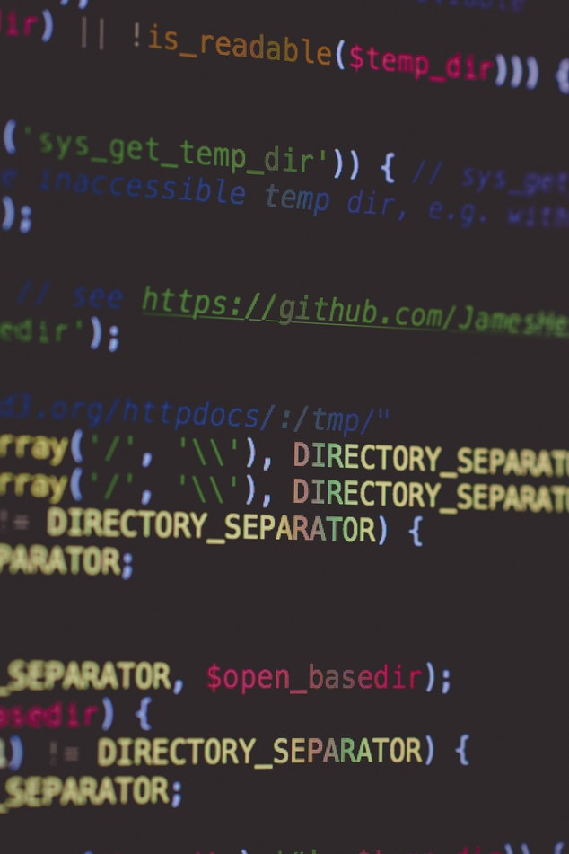

약 3시간 전까지 이 java와 씨름을 했다. 최대공약수를 구하기 위해 두 수의 약수중 동일하게 된 값을 i로 치환하여 프린트하기를 원했는데 for문과 if문으로 해당 i를 출력하면 약수까지 출력할 수 있지만 그 이후에 i를 array시킬 수 없었다. 이럴거라면 차라리 python에서 append를 쓰던 max를 쓰던 어떻게 해보겠다 생각했지만 list문처럼 쉽게 사용이 불가능해서 정말 쓰레기라고 생각했다. 이후에 생활코딩을 발견하고 자바스크립트가 내가 배워야할 언어임을 제대로 알고 이제 손을 잠깐 떼려고 한다. 그동안 분명히 다 잊게될 것이 분명하지만, 당분간 코드를 쓰지 않는다고 기본적으로 public static void main(stringp[] args){ } 요문장 까지 잊어먹지를 않기를 바랄 뿐이다.
함수를 만들어 알고리즘을 간단히 하는 것에 염증을 느끼고 있다. 다시 시작할 때 분명히 메소드와 클래스 부분을 이해하고 접근해야만 할 것이다.
